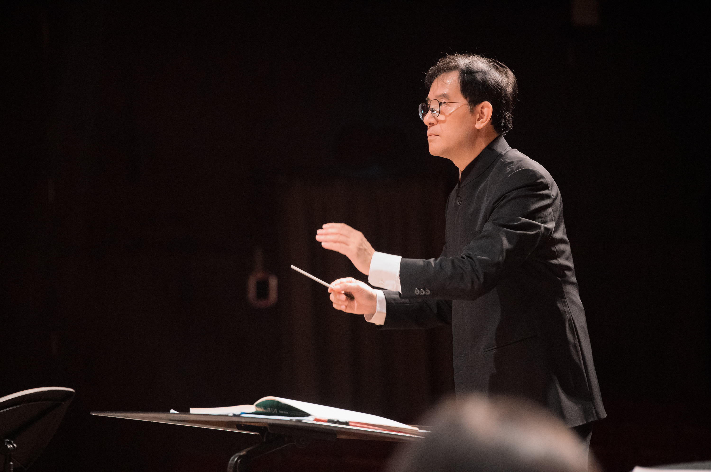

夜幕低垂，說書人化身嚮導，以音符翻開神祕物語。邀請您在星群下，聆聽關於夢與記憶的幻影奇談。
下載文字版 PDF 節目冊檔案
"I marveled at how musical much of the conducting and choral singing was." -- Professor Robert Winter, UCLA
 曾出任天使之翼管樂團團長與國立台北藝術大學音樂系管樂團指揮，並與台北青年管樂團合作演出 Haydn Eb major Concerto for Trumpet、於奧斯陸交響樂團來台演出時擔任羅馬之松小號聲部協演、與俄羅斯 Musica Viva! 樂團演出 Shostakovich Piano Concerto No.1 擔任小號獨奏。
曾出任天使之翼管樂團團長與國立台北藝術大學音樂系管樂團指揮，並與台北青年管樂團合作演出 Haydn Eb major Concerto for Trumpet、於奧斯陸交響樂團來台演出時擔任羅馬之松小號聲部協演、與俄羅斯 Musica Viva! 樂團演出 Shostakovich Piano Concerto No.1 擔任小號獨奏。
回國以後每年約舉行 30~40 場音樂會，歷年來帶領各級學校樂團參加全國音樂比賽區賽與決賽已獲得超過 60 次特優最高分。帶領樂團巡迴世界各地，足跡曾至美國、加拿大、奧地利、日本、澳洲、中國大陸、馬來西亞與新加坡。2008 年出任國立台灣交響樂團附設管樂團常任指揮，與德國 German Brass 合作演出，也曾加入兩廳院歌劇工作坊，與德國歌劇導演 P. Müller 合作。2007 年出任鳴石聖樂團管絃樂團暨合唱團常任指揮。
2012 年出任高雄市管樂團音樂總監，並邀請柏林愛樂小號首席 Gabor Takövi、阿姆斯特丹殿堂管絃樂團小號首席 Giuliano Sommerhalder、慕尼黑愛樂法國號首席 Jörg Brückner、法國豎笛獨奏家 Paul Meyer、東京佼成管樂團薩克斯風首席 須川展也 合作演出協奏曲，2013 年應南藝大音樂系系主任林暉鈞之邀請，指揮國立台南藝術大學音樂系管絃樂團與高雄創世歌劇團合作演出 W. A. Mozart 歌劇「魔笛」。2014 年受中國北京敦善管樂團邀請赴北京演出，成為該團史上首任客座指揮。